Trabajo Práctico N° 1
"Streaming de videojuegos"
Universidad: Universidad Autónoma de Entre Ríos
Facultad: Facultad de Ciencia y Tecnologia
Carrera: Licenciatura en Sistemas de Informacion
Cátedra: Fundamentos de Computación
Comisión: Miercoles 15 hs.
Profesores:
- Bioing. Ismael Cassi
- Lic. Paolo Orundés Cardinali
Integrantes:
- Renata Bracamonte
- Candela Itati Montani
- Lucas Maximiliano Nicola
- Mariano Diaz
- Emanuel Schiavoni
Fecha de entrega: 31 de Octubre de 2025
Año Lectivo: 2025
Imágenes generadas con IA
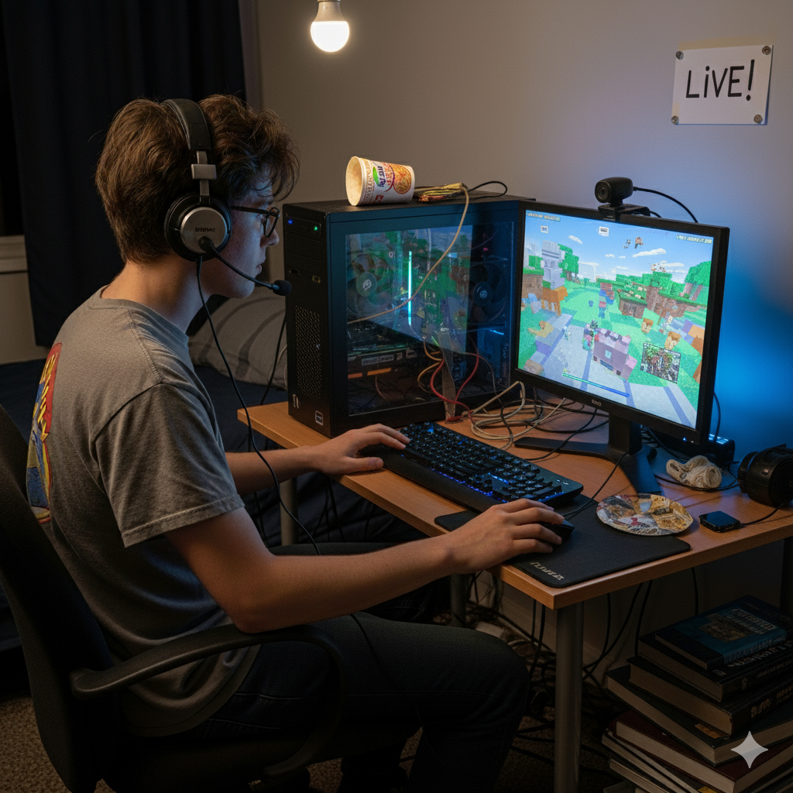
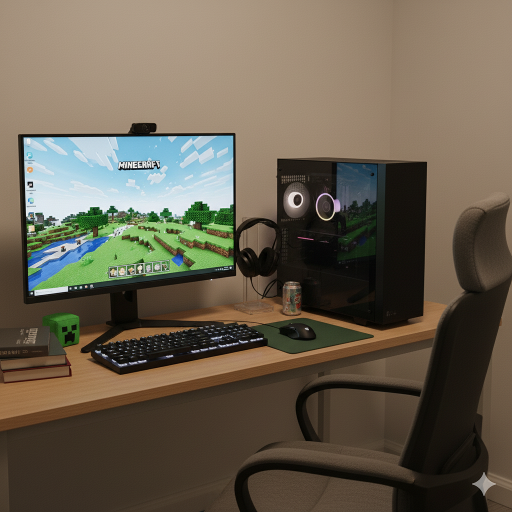
Juego elegido para la transmisón
Elección
Entre diferentes alternativas, elegimos Minecraft como la mejor
alternativa para transmitir.
Minecraft es un videojuego de mundo abierto desarrollado por Mojang
Studios y lanzado oficialmente en 2011. Su propuesta basada en la
construcción, exploración y creatividad lo ha convertido en uno de los
títulos más influyentes y accesibles del mundo de los videojuegos. En el
presente trabajo se lo ha seleccionado como base para un proyecto de
streaming debido a sus múltiples ventajas técnicas y su popularidad
sostenida.
Motivos de elección
La elección de Minecraft como juego para transmitir se fundamenta en
diversos aspectos que lo hacen especialmente apropiado para un proyecto
de streaming:
-
Accesibilidad técnica: el juego puede ejecutarse en
computadoras con recursos limitados, lo que permite mantener una
transmisión estable incluso con presupuestos reducidos.
-
Amplia audiencia: Minecraft cuenta con una comunidad
global que supera los 140 millones de jugadores activos mensuales. Su
popularidad garantiza una base de espectadores interesada en distintos
tipos de contenido.
-
Variedad de formatos: permite generar contenido
diverso (supervivencia, construcciones, retos, roleplay o speedruns),
adaptándose a distintos estilos de transmisión.
-
Interacción con la audiencia: las transmisiones de
Minecraft facilitan la participación de los espectadores mediante
votaciones, desafíos y juego colaborativo.
-
Compatibilidad y personalización: su estructura
modular admite el uso de servidores personalizados, mods y paquetes de
recursos que amplían las posibilidades creativas del streamer.
Minecraft en el ámbito del streaming
Desde sus inicios, Minecraft ha tenido una presencia constante en
plataformas como Twitch y YouTube Gaming. Fue uno de los primeros juegos
en popularizar la figura del creador de contenido digital, y continúa
entre los títulos más vistos. La posibilidad de generar mundos únicos y
experiencias interactivas lo hace ideal tanto para transmisiones en
directo como para series grabadas.
Además, la comunidad de espectadores de Minecraft es amplia y diversa,
abarcando desde público infantil hasta adultos interesados en el aspecto
creativo o técnico del juego. Esto facilita atraer distintos tipos de
audiencia según el enfoque del canal.
Conclusión
Minecraft es una opción estratégica para un proyecto de streaming por su
accesibilidad, su comunidad activa y su potencial para generar contenido
atractivo y variado. Combina un rendimiento técnico eficiente con una
base de espectadores consolidada, lo que asegura tanto la viabilidad
técnica del proyecto como su alcance comunicativo. Por estas razones, se
considera una elección adecuada dentro de los objetivos del trabajo
práctico.
Requerimientos Mínimos
Para jugar Minecraft
- OS: Windows 10 versión 19041.0 o superior
- Arquitectura: ARM, x64, x86
- Memoria: 4GB
- Controlador de movimiento: no especificado
- Headset: no especificado
- Procesador: Intel Celeron J4105 / AMD FX-4100
- Gráficos: Intel HD Graphics 4000 / AMD Radeon R5
Para streaming (720p, 3000kbps de bitrate)
- Conexión a internet estable
- Conexión a internet con más de 4 Mbps de subida
Requerimientos recomendados
Para jugar Minecraft
- OS: Windows 10 versión 19041.0 o superior
- Arquitectura: ARM, x64, x86
- Memoria: 8GB
- Controlador de movimiento: Windows Mixed Reality
- Headset: Windows Mixed Reality
- Procesador: Intel i7-6500U | AMD A8-6600K
- Gráficos: NVIDIA GeForce 940M | AMD Radeon HD 8570D
Para streaming (1080p, 6000kbps de bitrate a 60fps)
- Conexión a internet estable, sin perdida de paquetes
- Conexión a internet con más de 25 Mbps de subida
Presupuesto - Emanuel Schiavoni
Ajustándose al presupuesto de $1.000 USD equivalentes a $1.405.000 (con
el cambio a $1405 ARS al 14/10/2025), con el objetivo de llevar adelante
un streaming fluido y de calidad jugando a Minecraft, se seleccionaron
cuidadosamente un conjunto de componentes y periféricos teniendo en
cuenta diversos factores, optimizando el rendimiento del sistema para
garantizar una experiencia de transmisión estable y una buena calidad
visual. La configuración elegida brinda un equilibrio entre potencia de
procesamiento, capacidad gráfica y de multitasking, asegurando que el
equipo cumpla con los requisitos del juego y las demandas de la
transmisión en vivo en simultáneo, pero principalmente al seleccionar
cada componente, se priorizó la posibilidad de una futura expansión con
el objetivo de que el equipo pueda mantener su rendimiento durante la
mayor cantidad de tiempo posible. Los precios en su totalidad fueron
obtenidos de la tienda Maximus Gaming Hardware (maximus.com.ar), a excepción del UPS (Gezatek Computación:
gezatek.com.ar) y el juego
(Microsoft Store: xbox.com).
Componentes seleccionados
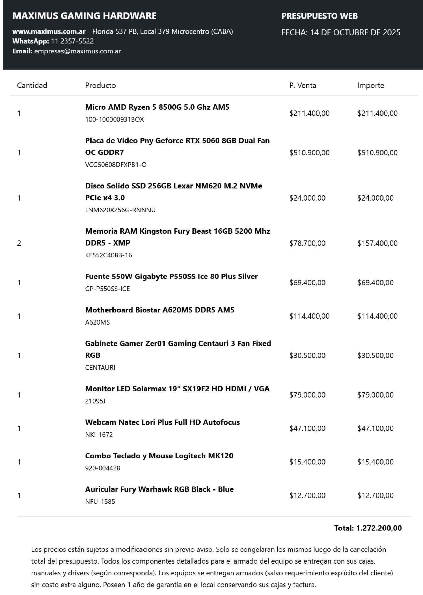
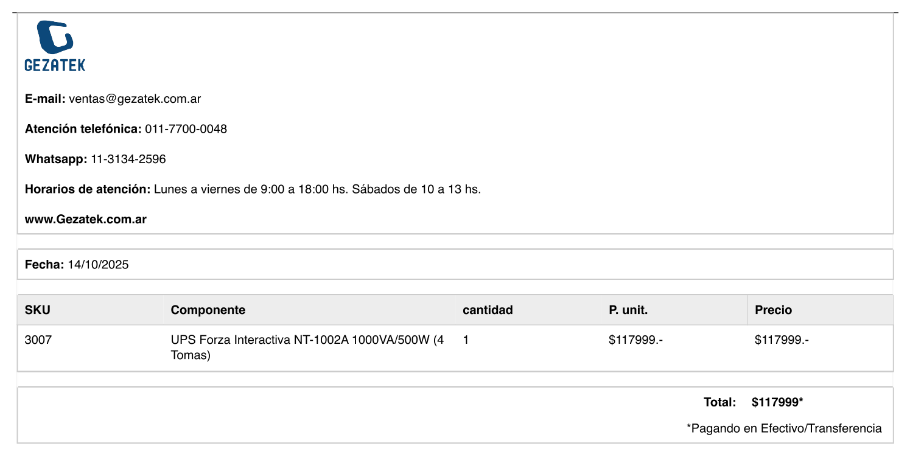

Software
Como costo de software solo corre el precio del juego (Minecraft Java
Edition, $13.199 ARS), ya que el software utilizado para hacer streaming
es Open Broadcast Software (OBS), que es gratis y de código abierto, y
como sistema operativo se eligió Ubuntu, que también es gratuito y de
código abierto.
Minecraft Java Edition puede correr sin pasos extras en este SO ya que
se ejecuta sobre la Java Virtual Machine, incluso hay benchmarks que
muestran mejores rendimientos en Linux por sobre Windows.
Los motivos de cada elección
Procesador
Para seleccionar el procesador se priorizó el zócalo AM5, ya que,
comparado con Intel, AMD mantiene sus zócalos vigentes durante más
tiempo, un claro ejemplo es el zócalo AM4 que vio la luz en 2016 y aún
en 2025 ha recibido nuevos procesadores compatibles. El primer CPU con
zócalo AM5 se lanzó en fines de 2022, lo que utilizar una placa madre
con este zócalo va a facilitar una futura mejora del sistema y por lo
tanto perdurar la vida útil de la mayoría de sus componentes.
Se eligió la versión con gráficos integrados por la disponibilidad del
proveedor; al utilizar una gráfica dedicada la mejor opción sería
conseguir la versión sin gráficos del mismo procesador para obtener un
mejor precio por el mismo rendimiento.
| Alternativas viables |
Ventajas |
Desventajas |
| AMD Ryzen 5 5500 |
Precio |
Socket AM4 |
| AMD Ryzen 5 5600 |
Rendimiento |
Precio y socket AM4 |
| AMD Ryzen 5 8500 |
Rendimiento, socket, compatibilidad con DDR5 |
Precio (70% más que la opción 1) |
| Intel i5 12400 |
Precio y rendimiento |
La vigencia del socket (pensando en una mejora futura) es
potencialmente corta
|
Tarjeta gráfica
Una vez que se eligió el procesador se buscó una gráfica acorde al
presupuesto y al CPU elegido, pero al priorizar la modernidad del
sistema (y con ello la facilidad de actualizaciones futuras) el
procesador elegido es muy potente para las tarjetas gráficas que entran
en el alcance del presupuesto disponible, por lo que es inevitable un
cuello de botella, va a sobrar potencia de CPU en la mayoría de las
tareas. Sin embargo, es importante aclarar que aún teniendo cuello de
botella esta elección sigue el enfoque de este presupuesto, ya que la
tarjeta gráfica es uno de los componentes que menos problemas de
compatibilidad causa al querer mejorar los componentes de una
computadora. Teniendo esto en claro, luego se priorizaron las GPU de
Nvidia debido a que el codec NVENC tiene un menor impacto en el
rendimiento al codificar el video del streaming mientras se juega, por
estos motivos se seleccionó una RTX 5060 de 8GB GDDR7.
| Alternativas viables |
Ventajas |
Desventajas |
| Radeon RX 7600 |
El mejor precio |
Mayor consumo y peor codec para streaming |
| Nvidia RTX 4060 |
Buen precio, codec NVENC |
Poca disponibilidad, rendimiento pobre respecto al CPU elegido
|
| Nvidia RTX 5050 |
Codec NVENC, última generación, excelente relación
precio-rendimiento
|
rendimiento insuficiente para aprovechar el CPU |
| Nvidia RTX 5060 |
Codec NVENC, última generación, buena relación precio-rendimiento
|
Precio al límite del presupuesto, rendimiento aceptable para el
CPU
|
| Nvidia RTX 4070 |
Rendimiento ideal para el CPU elegido, codec NVENC |
Precio muy por encima del presupuesto y poca disponibilidad |
Almacenamiento
Se seleccionó una memoria con la tecnología más rápida de la actualidad,
NVME, que aprovecha la velocidad del bus PCI Express alcanzando hasta
3000 MB/s superando ampliamente los 600 MB/s que puede alcanzar la
interfaz SATA 3. Para ajustarnos al presupuesto se selecciono una
capacidad pequeña pero más que suficiente para almacenar el sistema
operativo, un navegador, el software de streaming, y más de un juego.
Memoria RAM
Se propone un total de 32 GB de memoria RAM de tipo DDR5 a 5200 Mhz para
llevar adelante sin problemas el multitasking que requiere una
transmisión en vivo. Elegir DDR5 por encima de DDR4 permite superar las
capacidades y frecuencias limites de DDR4, pudiendo actualizar en un
futuro a velocidades de transferencia de hasta 7200 MHz. Además, se
eligieron 2 sticks de 16 Gb cada uno para que trabajen en dual channel
aumentando el ancho de banda y por ende la velocidad de transferencia.
| Alternativas viables |
Ventajas |
Desventajas |
| DDR4 |
Precio (teniendo en cuenta también los otros componentes que
conlleva)
|
Vida útil potencialmente corta, ya no es el estándar y en un
futuro cercano podría no brindar las capacidades que requieran
juegos o softwares modernos.
|
| DDR5 |
Es el nuevo estándar, si los sticks DDR5 que se compren son
insuficientes se reemplazan por memorias DDR5 de mejores
capacidades sin problema
|
Precio: requiere una placa madre y procesador compatibles, y al
ser ambos de última generación son más caros.
|
Fuente
Debido a que es un componente crítico, que en caso de falla puede
conllevar la perdida de otros componente o la totalidad de ellos, se
eligió una fuente de marca reconocida (Gigabyte) con certificación 80
Plus Silver. Se consideraron suficientes 550 Watts ya que el CPU
seleccionado especifica un TDP de 65 Watts, la GPU 180 Watts y el resto
de los componentes se estima que en carga promedian 120 Watts, por lo
que todo esto sumaría un máximo de 365 Watts en carga, y la
certificación de la fuente nos garantiza disponer del 80% de 550 Watts
(440 Watts).
Placa madre
Sin rebuscar demasiado, se eligió la placa madre de menor precio
compatible con los componentes mencionados anteriormente (zócalo AM5,
DDR5 y NVME).
Gabinete y periféricos
El gabinete fue elegido por traer 3 ventiladores instalados ya que el
precio de estos por separados es mayor.
Se seleccionó un gabinete con 3 ventiladores incluidos, un monitor,
webcam, auriculares con micrófono, teclado y mouse, de gama de entrada
para adecuarse al presupuesto y porque Minecraft no es un juego
competitivo que requiera gran precisión en estos componentes.
Fuente de alimentación ininterrumpida para contrarrestar cortes de
energía
Se añadió un UPS (Uninterruptable Power Supply: fuente de alimentación
ininterrumpida) para permitir que el usuario del equipo cierre la
transmisión de manera controlada en caso de que el suministro de energía
se corte de forma inesperada.
Rendimiento esperado
El rendimiento en Minecraft varía ampliamente según la configuración
gráfica, principalmente según la distancia de renderizado (medida en
chunks) y los shaders seleccionados.
Según los benchmarks reales que se pudieron encontrar, en 1080p, con una
distancia de renderizado de 12 chunks y el resto de opciones gráficas en
alto, se estima un rendimiento de 800 fps en promedio (oscilando desde
650 a 950). Sin embargo esto cambia rotundamente al configurar shaders,
ya que algunos tiene una carga mucho más pesada que otros; con shaders
de carga gráfica pesada se estiman unos 170 fps en promedio, con shaders
de carga media unos 320 fps en promedio, y con shaders livianos +600
fps.
Debido a la significativa variación de rendimiento según la
configuración gráfica, el límite para la calidad de la transmisión en
vivo estará dado por la configuración gráfica que se seleccione; a mayor
calidad de transmisión, se debería elegir una menor configuración
gráfica en el juego para balancear el rendimiento de ambas tareas.
En conclusión, el codificador NVENC de Nvidia está optimizado para no
generar un impacto considerable al ser utilizado mientras se juega, por
lo que el equipo que se recomienda no debería presentar ningún problema
al transmitir en vivo en calidad 1080p a 60fps con un bitrate de 6.000
kbps siempre y cuando se seleccione una configuración gráfica adecuada
en el juego.
Colaboración de la IA
Ayuda en la elección inicial
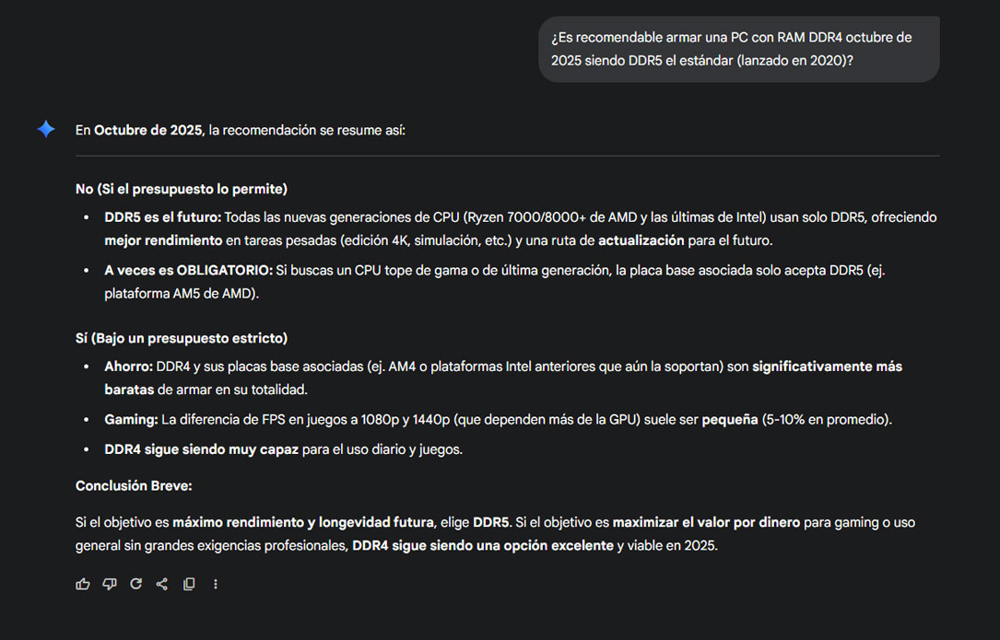
Estoy de acuerdo con la respuesta. DDR5 vio la luz en 2020, ya pasaron 5
años, por lo que las próximas placas madres solo serán compatibles con
DDR5 y por lo tanto el zócalo del CPU será actualizable por mucho más
tiempo que aquellos que traen las placas madres con DDR4.
Comparación y validación con fuentes externas
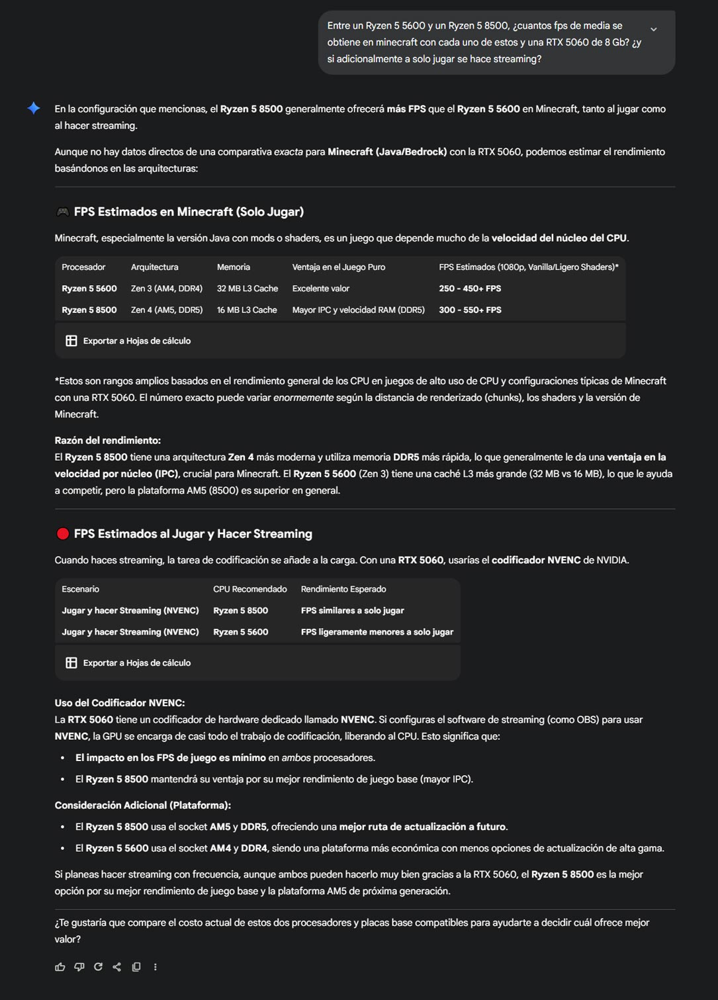
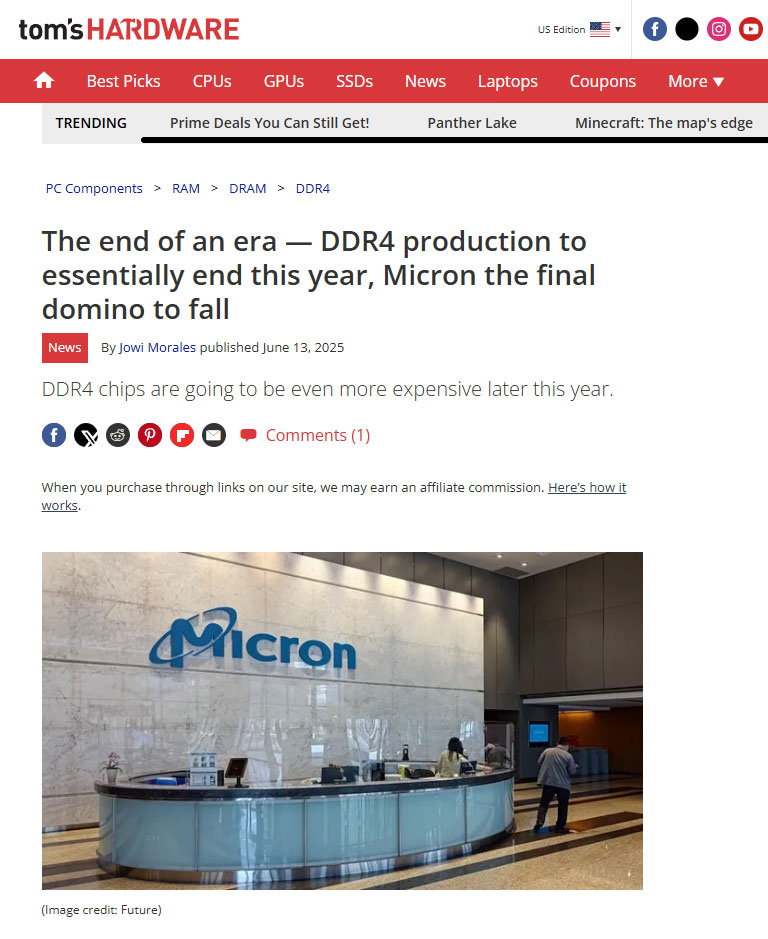
Coincidente con la respuesta de la IA, no es recomendable armar una PC
con DDR4 hoy en día, la fuente externa (Tom’s Hardware) afirma que antes
del próximo año se dejaran de producir en su totalidad, por lo tanto
DDR5 es necesario.
Explicación técnica y traducción al “lenguaje común”
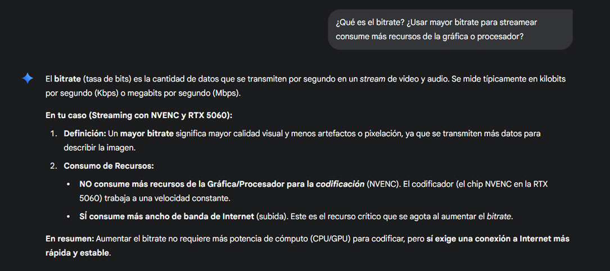
En palabras menos técnicas, para que alguien totalmente ajeno a la
tecnología entienda: el bitrate es la clave de la calidad en un video
digital, un bitrate bajo envía pocos detalles, como si estuviera borroso
(o pixelado) y un bitrate alto envía mayor cantidad de detalles. Y para
que la imagen nítida llegue sin problemas, no necesitas una computadora
más potente, sino que la tubería por la que viaja (la conexión a
internet) sea lo suficientemente ancha para enviar todos esos datos por
segundo.
Presupuesto - Candela Montani
Tomando en cuenta el presupuesto limitado por $1.000 USD y el cambio de
moneda del valor actual de $1405 ARS he realizado un presupuesto para
una computadora gamer que se ajusta a los requisitos mínimos del juego
MINECRAFT, elegido por todo el grupo. Se buscó la idea de que tal
computadora sea con elementos básicos y para nada ostentosos, buscando
ajustarse al presupuesto sin dejar de lado la calidad de la misma.
La computadora fue armada en gran parte en la página MAXIMUS Gaming
Hardware, en conjunto con Gezatek, de donde se incluyó el UPS.
Presupuesto - Lista
- MICROPROCESADOR: Micro AMD Ryzen 5 8500G 5.0 Ghz AM5
- PLACA MADRE: Motherboard Biostar A620MS DDR5 AM5
- DOS MEMORIA RAM: Memoria RAM Kingston 8GB 5600 Mhz DDR5 CL46
-
PLACA DE VIDEO: Placa de Video Galax Nvidia Geforce RTX 3050 6GB EX
GDDR6 1-Click OC - Black
- ÚNICO DISCO SSD: Disco Solido SSD 480GB Hiksemi Wave SATA III
- GABINETE: Gabinete Gamer Zer01 Gaming Centauri 3 Fan Fixed RGB
- FUENTE: Fuente 500W Gamemax VP-500 80 PLUS Bronze
- MONITOR: Monitor LED IPS 24" Asus VA24EHF-J FHD 100Hz 1ms
- TECLADO Y MOUSE COMBO: Combo Teclado y Mouse Logitech MK120
- AURICULARES: Auricular Fury Warhawk RGB Black - Blue
- WEBCAM: Webcam Natec Lori Plus Full HD Autofocus
- UPS: UPS Forza Interactiva NT-1002A 1000VA/500W
- SOFTWARE: Linux
Especificaciones técnicas
Teniendo en cuenta que la elección de los componentes fue basada en el
enfoque de jugar al juego MINECRAFT con requerimientos mínimos, las
especificaciones sacadas de la misma página donde fueron comprados los
componentes y de búsquedas de google son:
-
Microprocesador: el microprocesador Micro AMD Ryzen 5 8500G 5.0 Ghz
AM5, según la página, contiene 6 núcleos, con una frecuencia máxima de
5 GHz, Cooler incluido y memoria caché de L1=64Kb por núcleo, L2=1MB
por núcleo y L3=16MB compartida.
-
Placa madre: la placa madre Motherboard Biostar A620MS DDR5 AM5
contiene Chipset AMD A620, Socket de AM5 y distintas conectividades
como lo es USB, M.2, SATA,etc.
-
Memoria RAM: La memoria RAM Kingston 8GB 5600 Mhz DDR5 CL46 tiene un
tamaño de memoria de 8GB, con un formato de UDIMM y tipo DDR5. En su
funcionamiento, contiene una latencia CAS de 46, con un voltaje de 1.1
V y una velocidad de 5600 MT/S, entre otras cosas.
-
Placa de video: la Placa de Video Galax Nvidia Geforce RTX 3050 6GB EX
GDDR6 1-Click OC - Black contiene una arquitectura NVIDIA Ampere-
Serie RTX 30, con una memoria de 6GB, con ventiladores y Backplate
para su refrigeración y con un rendimiento de: CUDA Cores 2 304, Boost
Clock ~1 470 MHz · 1-Click, OC: ~1 485 MHz y PCle 4.0.
-
Disco SSD: el Disco Solido SSD 480GB Hiksemi Wave SATA III contiene
una capacidad de 480 GB, Interfaz SATA III / 6Gb/s y Tipo de memoria
NAND 3D, entre otros.
-
Gabinete: el Gabinete Gamer Zer01 Gaming Centauri 3 Fan Fixed RGB
contiene dimensiones de: ancho: 170 mm, alto: 305 mm, profundidad: 350
mm, con refrigeración de ventiladores frontales, trasero y cooler
incluido, conectividad USB 1.0 y audio HD.
-
Fuente: la Fuente 500W Gamemax VP-500 80 PLUS Bronze, según búsquedas
de google, ya que en la página no se es muy específico, contiene una
potencia: 500W, certificación: 80 PLUS Bronze y dimensiones: ancho:
140 mm, largo: 150 mm y alto: 86 mm.
-
Monitor: el Monitor LED IPS 24" Asus VA24EHF-J FHD 100Hz 1ms, según
búsquedas de google, ya que en la página no se es muy específico,
contiene un tamaño del panel visible de 23,8 pulgadas, con el tipo de
panel IPS LED con superficie antirreflejo y Resolución nativa de Full
HD ‒ 1920 × 1080 píxeles.
-
Teclado y mouse: el Combo Teclado y Mouse Logitech MK120 contiene,
según búsquedas de google, un diseño de perfil bajo, teclas cóncavas
de hasta 10 millones de pulsaciones, patas ajustables y luces
indicadoras de mayúsculas. El mouse tiene seguimiento óptico y una
resolución de 1000ppp.
-
Auricular: el Auricular Fury Warhawk RGB Black - Blue, según búsquedas
de google, contiene un rango de frecuencia de 15 a 25000 Hz y una
sensibilidad de 98 dB.
-
Webcam: la Webcam Natec Lori Plus Full HD Autofocus contiene una
resolución de hasta 1920 x 1080 píxeles a 30 fps, un micrófono
integrado y un campo de visión horizontal de 65°.
-
UPS: el UPS Forza Interactiva NT-1002A 1000VA/500W contiene una
capacidad de 1000 VA/500W, con voltaje de entrada y salida de 220V, y
un rango de operación de entrada de 162-268VCA.
Precio final y fuentes de compra
El precio total de la computadora es la suma de algunos elementos en
conjunto de $1.043.700, con la cámara de $47.700, el costo de juego de
$8.799 y el UPS de $117.999
TOTAL: $1.218.198
Fuentes:
-MAXIMUS Gaming Hardware.
-Gezatek.
-MICROSOFT XBOX
Justificación y alternativas
-
Microprocesador: el microprocesador fue elegido gracias a su GPU
integrado, lo cual permite jugar sin tener que incluir una tarjeta de
video, aunque la misma fue incluida en el presupuesto. El rendimiento
permite un adecuado uso tanto para juegos como para tareas
independientes, además del streaming. Su precio es muy aceptable para
el presupuesto limitado.
Como alternativa, elegiría un AMD Ryzen 7 8700G (AM5), ya que es un
nivel un poco superior a mi elección, con más núcleos, hilos y mejor
contemplación de upgrades, así como otras características.
-
Placa madre: la placa madre fue elegida gracias a que soporta
procesadores AMD Ryzen de series 7000 u 8000, lo que me permite usarla
tanto en la elección de mi microprocesador como en la alternativa. Su
precio es bastante accesible, además de soportar un buen tamaño de
memoria, la cual es necesaria para el juego.
Como alternativa, podría decir que tengo en mente a la Gigabyte
B650M-H AM5 DDR5, la cuál es un poco más avanzada y contiene mejores
actualizaciones a futuro, según se tiene previsto, además de tener una
mejor capacidad de expansión, varía en otros aspectos.
-
Memoria RAM: la memoria RAM se eligió principalmente por su capacidad,
la cual se adapta al juego elegido, además de contener una velocidad
alta, una latencia digna y una buena eficiencia energética.
Como alternativa, tengo en mente a la ADATA AD5S56008G‑S, la cual es
muy parecida a mi elección en términos de capacidad de memoria,
velocidad y latencia.
-
Placa de video: la placa de video se eligió debido a su buen
rendimiento en 1080p, lo cual es bastante decente para usarla con
videojuegos y su calidad y precio se adapta tanto al presupuesto como
a mi base pensada para armar la computadora gamer.
Como alternativa, pondría a la AMD Radeon RX 6600 de 8GB, debido al
mejor rendimiento que tiene comparada con mi elección final.
-
Disco SSD: el disco SSD se eligió por su capacidad de memoria de
480GB, lo que ayuda a instalar varios juegos en ella, su durabilidad
buena y su bajo consumo.
Como alternativa, elegiría la WD Green SN350 500GB NVMe, la cual tiene
más memoria que mi elección y eso es lo que priorizo cuando me toca
elegir una SSD.
-
Gabinete: el gabinete se eligió debido a sus luminosos colores, lo
cual decora el set up de una manera más divertida, además de ofrecer
un buen espacio para todos los componentes y conectores básicos como
lo son el USB, audio, micrófono y auriculares.
Como alternativa, podría elegir uno de las mismas características,
sencillo, divertido y básico como lo es el Gabinete Lnz M11.
-
Fuente: la fuente fue elegida por su certificación 80 PLUS Bronze, el
cual garantiza una eficiencia energética muy aceptable, junto con sus
protecciones eléctricas, ventilación silenciosa y conectividad
sencilla.
Como alternativa, optaría por la fuente 550W Corsair CV550 80 PLUS
Bronze, debido a que cuenta con su misma certificación y sus
características ligeramente superiores a mi elección.
-
Monitor: el monitor fue elegido por su calidad de imagen y
rendimiento, sin dejar de lado que es económico pero que cumple con la
finalidad para jugar videojuegos.
Como alternativa, pondría a la Acer Nitro KG241Y, la cual tiene un
precio un poco más elevado, pero su diseño es igual o mejor que el
monitor elegido.
-
Teclado y mouse: el combo mouse y teclado fue elegido por su económico
precio, siendo que no tenía la idea de gastar demasiado del
presupuesto en este tipo de periféricos.
Como alternativa, optaría por el Combo Logitech MK120, el cual
contiene ambos elementos elegidos en mi decisión final, con un precio
dentro de mi presupuesto estimado.
-
Auriculares: los auriculares fueron elegidos con el mismo propósito
del mouse y el teclado, el cual es su bajo precio, además de fijarme
en la comodidad de los mismos y que cuenten con un micrófono
integrado.
Como alternativa, elegiría un modelo tipo Auricular HyperX Cloud
Stinger Black, el cual entra dentro de mi presupuesto, cuenta con
micrófono y comodidad al ponerlos y tenerlos durante el juego.
-
Webcam: la webcam Webcam Natec Lori Plus Full HD Autofocus fue elegida
por su precio moderado y su calidad de 1080p.
Como alternativa podría elegir a la Cámara Web Logitech C920 Pro, por
su misma calidad a mi elección y su bajo precio, el cual me permite
incluso ahorrar más con mi limitado presupuesto.
-
UPS: el UPS fue elegido por su capacidad y armado total de
características destinadas a mantener la energía que le entrega a la
computadora.
Como alternativa elegiría al No break CyberPower, el cual tiene una
buena capacidad y su precio es bueno, adaptado a mi presupuesto.
-
Software: el software linux fue elegido debido a que es gratis,
gracias a eso me permitió ahorrar en mi presupuesto.
Como alternativa, elegiría Windows porque es un sistema operativo que
conozco hace mucho tiempo.
Capturas del presupuesto


Rendimiento esperado
Para el análisis del rendimiento esperado para el juego, podemos decir
que, según lo investigado, en una computadora gamer gama media y sin
shaders, el juego MINECRAFT suele estar entre los 60 y 150 FPS, siempre
dependiendo del hardware elegido. Con shaders, el número suele valer
entre los 30 y 60 FPS.
Sobre la calidad y resolución que se estima está en el valor 1080p
basándonos en los componentes elegidos para conformar una computadora,
los cuales recorren ese valor.
Interacción con la IA
 Estoy de acuerdo con esta respuesta, sí bien es cierto que la RAM
asignada a MINECRAFT es de 4GB, me gustó que optara directamente un
mínimo de 8GB de memoria RAM puesto que me asegura una buena experiencia
de duración. En mi presupuesto elegí dos memorias de dos GB, y si bien
este dato de color no me lo dio la IA, el conocimiento básico que
adquirí me permitió saber el uso de doble memoria RAM.
Estoy de acuerdo con esta respuesta, sí bien es cierto que la RAM
asignada a MINECRAFT es de 4GB, me gustó que optara directamente un
mínimo de 8GB de memoria RAM puesto que me asegura una buena experiencia
de duración. En mi presupuesto elegí dos memorias de dos GB, y si bien
este dato de color no me lo dio la IA, el conocimiento básico que
adquirí me permitió saber el uso de doble memoria RAM.
 Puedo estar parcialmente de acuerdo, creo firmemente que una PC de
escritorio es mucho más cómoda a la hora de ponernos a jugar videojuegos
al lado de una notebook.
Puedo estar parcialmente de acuerdo, creo firmemente que una PC de
escritorio es mucho más cómoda a la hora de ponernos a jugar videojuegos
al lado de una notebook.
Me gusta el hecho de que una notebook pueda ser llevable a todos lados,
pero de mi parte, optaría por la computadora de escritorio para jugar
videojuegos, puesto que, como me muestra la IA, priorizaría el precio y
la potencia.
 Decidí comparar estos dos microprocesadores, puesto que eran las
opciones principales que tuve al momento de pensar en el armado de mi
computadora.
Decidí comparar estos dos microprocesadores, puesto que eran las
opciones principales que tuve al momento de pensar en el armado de mi
computadora.
Según la página oficial de Intel, la mayoría de la información que
contiene el cuadro es verídica. (Link de la fuente al final).
Según la página oficial de AMD, la información propuesta en el cuadro es
verdadera en su totalidad. (Link de la fuente al final).
Podemos concluir, mirando las páginas oficiales, que la IA hizo un
cuadro resumido y verdadero, permitiendo una creíble comparación entre
los dos microprocesadores.
Intel:
https://www.intel.la/content/www/xl/es/products/sku/236777/intel-core-i5-processor-14400f-20m-cache-up-to-4-70-ghz/specifications.html
AMD:
https://www.amd.com/es/products/processors/desktops/ryzen/8000-series/amd-ryzen-5-8500g.html
 Explicación IA: Incluir una placa de video de gama alta en una
computadora gamer de gama media mejora significativamente el rendimiento
gráfico, permitiendo jugar a resoluciones altas (como 1080p o 1440p) con
mayores tasas de FPS, mejor calidad visual y soporte para tecnologías
como ray tracing o DLSS. Aunque otros componentes (como CPU o RAM) sean
de gama media, una buena GPU evita cuellos de botella en juegos
exigentes y extiende la vida útil del equipo para futuros títulos.
Explicación IA: Incluir una placa de video de gama alta en una
computadora gamer de gama media mejora significativamente el rendimiento
gráfico, permitiendo jugar a resoluciones altas (como 1080p o 1440p) con
mayores tasas de FPS, mejor calidad visual y soporte para tecnologías
como ray tracing o DLSS. Aunque otros componentes (como CPU o RAM) sean
de gama media, una buena GPU evita cuellos de botella en juegos
exigentes y extiende la vida útil del equipo para futuros títulos.
Explicación al lenguaje común: Esta explicación técnica nos deja saber
que, aunque contemos con una computadora gamer que tiene componentes que
funcionan en un nivel promedio a los requerimientos del juego, una placa
de video superior a ese nivel nos deja disfrutar de imágenes de mejores
calidades a la vista, siendo un acierto comprar una, independientemente
del rendimiento medio de la computadora.
Conclusión del presupuesto
Para mi conclusión final sobre el armado del presupuesto, debo decir que
la IA fue de mucha ayuda, junto con Google, a la combinación e
información sobre los componentes de la computadora a armar. Puesto que
no sé mucho sobre los componentes que debe tener una computadora gamer,
la IA me ayudó respondiendo y dándome fuentes en donde informarme.
No detecté errores o información poco confiable, ya que la información
que me daba coincidía muchas veces con la información que yo misma veía
en los sitios de venta de componentes.
Con respecto a la última pregunta a responder, en temas en donde quiero
investigar y leer a profundidad es donde prefiero buscar manualmente
fuentes y sitios web en donde informarme, no tendría una razón
específica más que la de que me gusta navegar en profundidad cuando es
un tema que me llama demasiado la atención como para simplemente
interactuar con una IA.
Presupuesto - Lucas Nicola
Componentes Principales
A continuación se presenta la selección y justificación de los
componentes de una PC orientada al streaming y al uso intensivo en
videojuegos y multitarea. Cada componente fue elegido con el objetivo de
lograr un equilibrio entre rendimiento, calidad y costo, asegurando una
experiencia fluida y estable.
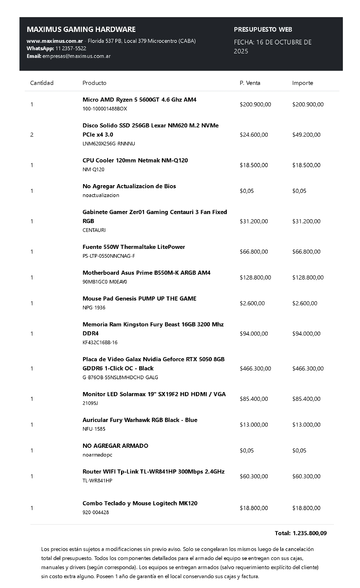
Procesador AMD Ryzen 5 5600GT 4.6GHz AM4
El Ryzen 5 5600GT ofrece un rendimiento excelente en aplicaciones
exigentes gracias a sus 6 núcleos y 12 hilos. Es ideal para streaming
porque puede manejar tareas simultáneas sin pérdida de fluidez.
Comparación: Frente a un Ryzen 5 4600G, el modelo 5600GT presenta una
mejora notable en frecuencia y arquitectura, lo que se traduce en mayor
rendimiento por núcleo. Aunque el 4600G podría haber sido una opción más
económica, el 5600GT garantiza una vida útil más prolongada y mejor
desempeño en escenarios multitarea.
Motherboard Asus Prime B550M-K ARGB AM4
Esta placa madre ofrece compatibilidad completa con los procesadores
Ryzen actuales y soporte para memorias de alta frecuencia. Además,
incorpora una construcción sólida y conectividad moderna.
Comparación: En relación con una placa A520M, la B550M-K se destaca por
ofrecer ranuras PCIe 4.0 y mejor soporte para futuras actualizaciones.
Aunque la A520M sería más económica, su menor capacidad de expansión la
vuelve menos adecuada para un proyecto orientado al streaming.
Memoria RAM Kingston Fury Beast 16GB 3200 MHz DDR4
Con 16GB de capacidad y una frecuencia de 3200 MHz, esta memoria permite
ejecutar programas de streaming, videojuegos y aplicaciones de edición
sin problemas de lentitud.
Comparación: Frente a una opción de 8GB a 2666 MHz, la Kingston Fury
Beast duplica la capacidad y ofrece una velocidad de lectura y escritura
superior. Esta mejora se traduce en mayor estabilidad al transmitir y
realizar múltiples tareas.
Placa de Video Galax Nvidia GeForce RTX 5050 8GB GDDR6
La RTX 5050 es una GPU moderna que brinda un excelente rendimiento
gráfico y soporte para tecnologías como Ray Tracing y codificación
NVENC, muy útiles para streaming en alta calidad.
Comparación: Frente a una GTX 1650 Super, la RTX 5050 ofrece un salto
importante en rendimiento y eficiencia. Aunque la GTX sería más
accesible, la RTX garantiza fluidez al grabar y transmitir, además de
mayor longevidad en el tiempo.
Discos Sólidos SSD Lexar NM620 M.2 NVMe PCIe x4 256GB (x2)
La elección de dos SSD M.2 NVMe proporciona una excelente velocidad de
lectura y escritura, ideal para reducir los tiempos de carga y mejorar
la respuesta general del sistema.
Comparación: En relación con un único SSD SATA de 480GB, la
configuración NVMe ofrece una velocidad hasta seis veces mayor. Aunque
el costo por gigabyte es un poco superior, el rendimiento justifica
ampliamente la elección.
Fuente Thermaltake LitePower 550W
Una fuente confiable con buena eficiencia energética, capaz de alimentar
todos los componentes con margen de seguridad.
Comparación: Frente a una fuente genérica de 500W sin certificación, la
Thermaltake asegura estabilidad y protección eléctrica, algo esencial
para cuidar componentes costosos y mantener el sistema estable durante
transmisiones largas.
Gabinete Gamer Zer01 Centauri 3 Fan RGB
El gabinete ofrece buena circulación de aire, tres ventiladores RGB y
espacio interno suficiente para futuras ampliaciones.
Comparación: A diferencia de un gabinete básico sin ventilación frontal,
el modelo Centauri mejora la temperatura interna y ofrece una
presentación más cuidada. Aunque implica un costo levemente mayor,
contribuye directamente al rendimiento térmico y la durabilidad del
hardware.
Precaución contra cortes de energía
Se añadió un UPS (fuente de alimentación ininterrumpida) para permitir
que el usuario del equipo cierre la transmisión de manera controlada en
caso de que el suministro de energía se corte de forma inesperada.

Software
Se tienen en cuenta el costo del juego (Minecraft Java Edition, $13.199
ARS), y el costo de la licencia para el sistema operativo Windows 11 Pro
($9.495). El software para transmitir es Open Broadcast Software (OBS),
es gratis y de código abierto.
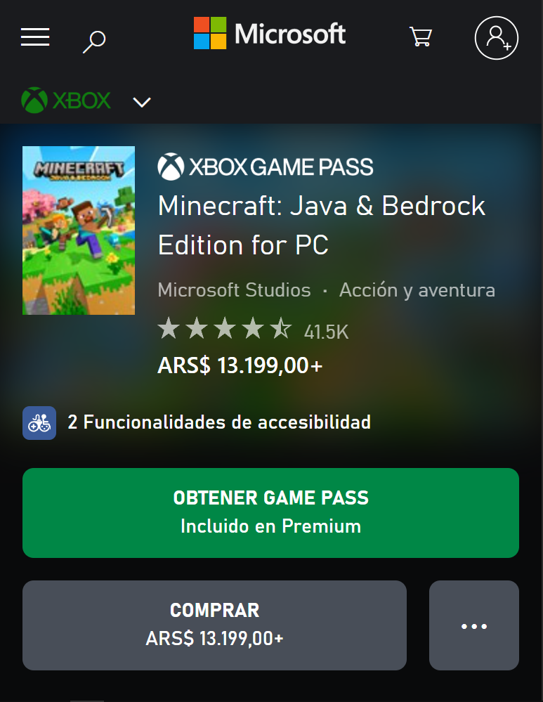
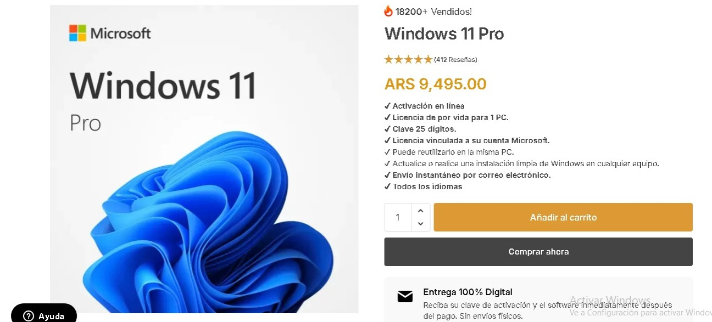
Comparativa entre componentes
A continuación se muestra una tabla comparativa con alternativas para
cada componente y el motivo de elección de cada uno
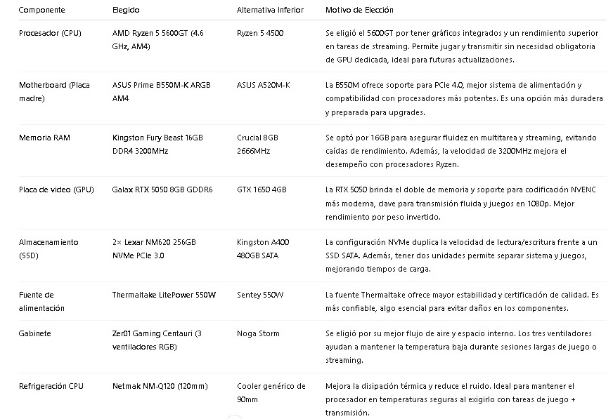
Rendimiento esperado
El armado resultante combina potencia, velocidad y estabilidad,
permitiendo realizar streaming, jugar y trabajar con fluidez. La
elección de componentes modernos y equilibrados asegura una experiencia
de alto nivel sin exceder el presupuesto disponible.
Este proyecto demuestra que con planificación y criterio técnico se
puede construir un equipo competitivo, preparado tanto para la creación
de contenido como para afrontar las demandas del software actual y
futuro.
Interacción con la IA

Tiene mucho sentido, ya que si el procesador no tiene suficientes
núcleos o no tiene buena potencia por núcleo, se convierte en un cuello
de botella, y eso se traduce en tirones, bajones de FPS o pérdida de
fluidez tanto en el juego como en el stream. En otras palabras, aunque
tengas una buena placa de video, si el procesador no da abasto, no vas a
poder aprovechar todo el rendimiento.


Estoy de acuerdo, ya que hoy en día, 16 GB de RAM es el mínimo
recomendable para jugar y streamear en 1080p porque los juegos actuales
ya consumen una buena parte de la memoria por sí solos, y el programa de
streaming (como OBS, por ejemplo) también necesita bastante RAM para
codificar el video, manejar escenas, overlays, cámara, etc.
Consulta tecnica (Latencia)
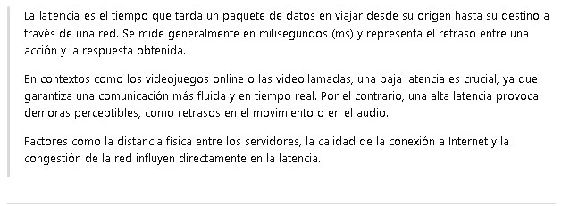
La latencia es básicamente el tiempo que tarda algo en reaccionar
después de que vos hacés una acción por Internet. Por ejemplo, cuando
jugás online y apretás una tecla para moverte, si el personaje tarda en
responder, eso es latencia: hay un pequeño “delay” entre lo que hacés y
lo que pasa. Se mide en milisegundos (milésimas de segundo): cuanto más
bajo el número, mejor, porque todo responde más rápido. Una latencia
alta puede deberse a que el servidor está lejos, la conexión es lenta o
la red está muy cargada.
Presupuesto Renata
Lista de componentes elegidos
- Procesador (CPU): AMD Ryzen 7 5700G 4.6 GHz (AM4)
- Motherboard: ASUS PRIME B550M-A AC (mATX, AM4, PCIe 4.0, Wi-Fi)
- Memoria RAM: 2 × 8 GB Hiksemi Armor DDR4 3200 MHz (16 GB total)
- Almacenamiento: Kingston NV3 1 TB M.2 NVMe PCIe Gen4×4
- Placa de video (GPU): Galax NVIDIA GeForce RTX 3050 EX 6 GB
- Coolers: Thermaltake LE120 ARGB Sync 3×120 mm
- Gabinete: GAMDIAS AURA GC1 Elite WH ARGB Mid Tower (blanco)
- Fuente: Thermaltake Smart BX1 RGB 650 W 80+ Bronze
-
Periféricos: Teclado Redragon S147 + mouse + Auricular Gamer Redragon
Cronus + mousepad
-
Monitor: Monitor Gamer Curvo LED Solarmax 24" SX24C7 100Hz FHD HDMI
- Parlantes: Genius SP-HF180 Negro USB 6 Watt
- UPS: Forza Interactiva NT-1002A
La suma total de componentes da: $1.345.103 pesos argentinos, por lo
tanto respeta el presupuesto (1000 dolares)
A esto tambien hay que sumarle la instalacion del juego (minecraft) que
hoy en dia esta cerca de los $16.000 pesos argentinos, dependiendo de
que version instales.
Entonces el presupuesto final de esta pc de escritorio seria de
$1.361.103 pesos argentinos
Especificaciones técnicas relevantes
-
CPU: Ryzen 7 5700G — 8 núcleos / 16 hilos, turbo 4.6
GHz, TDP 65 W, GPU integrado : Radeon Graphics, maxima frecuencia: 4,6
GHz.
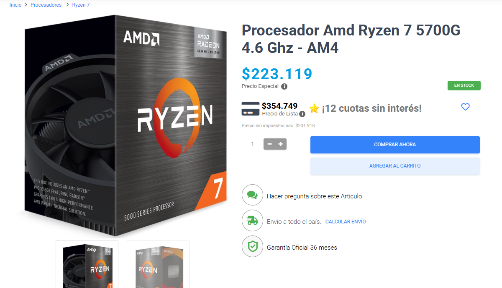
Ver producto en tienda
En Mexx con un costo de $223.119
-
Motherboard:Asus B550M-A AC — PCIe 4.0, Wi-Fi, 2×M.2,
DDR4, Capacidad máxima soportada de la memoria RAM: 128 GB, 1 x D-Sub,
1 x DVI-D, 1 x HDMI 2.1 (4K a 60 HZ)
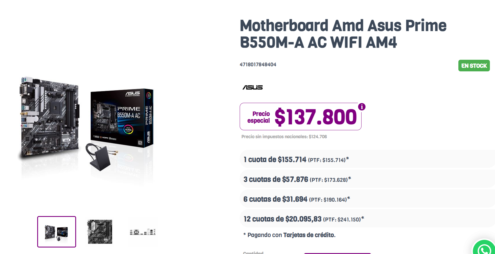
Ver producto en tienda
En Mym Computacion con un costo de $137.800
-
RAM: 16 GB DDR4 3200 MHz Dual Channel, 1.35 V, con
disipador de calor
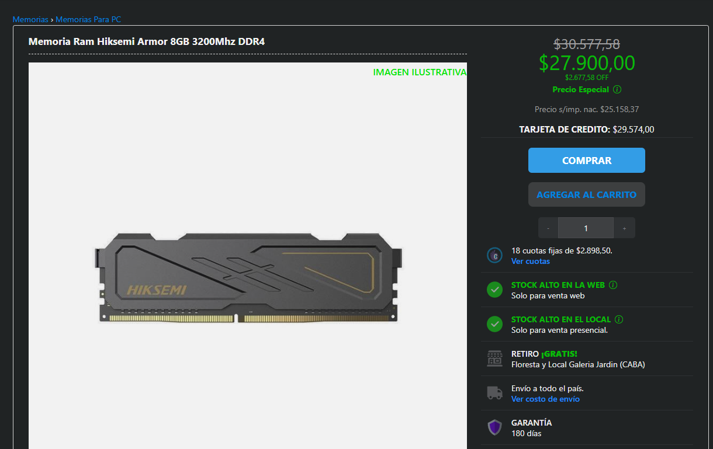
Ver producto en la tienda
En Maximus con un costo de $27.900 cada memoria
-
Almacenamiento: NVMe Gen4×4 — lectura 6000 MB/s
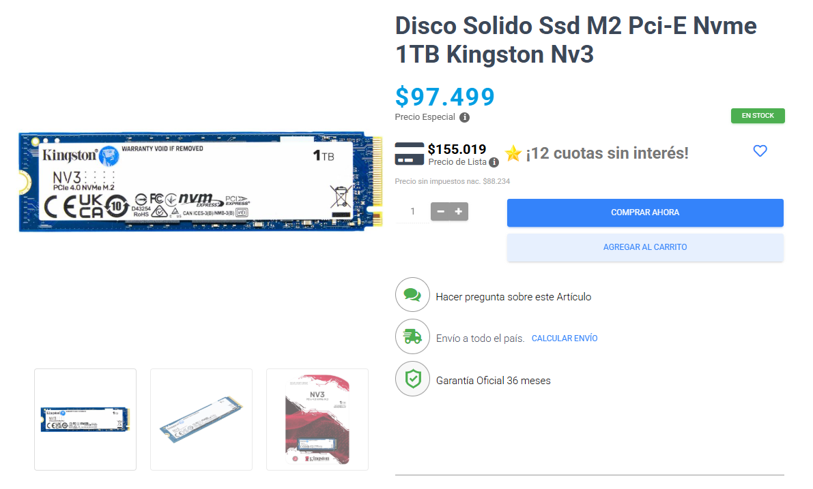
Ver producto en la tienda
En Mexx con un costo de $97.500
-
GPU: RTX 3050 EX — 6 GB GDDR6 96-bit · 14 Gbps · 168
GB/s, DLSS, NVENC, PCIe 4.0, 130 W
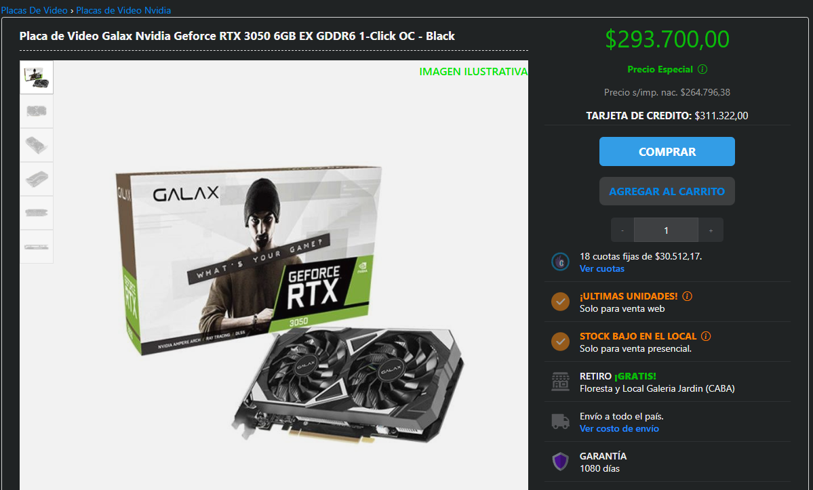
Ver producto en la tienda
En Maximus con un costo de $293.700
- Fuente: 650 W 80+ Bronze — RGB, 120 mm, 6 SATA
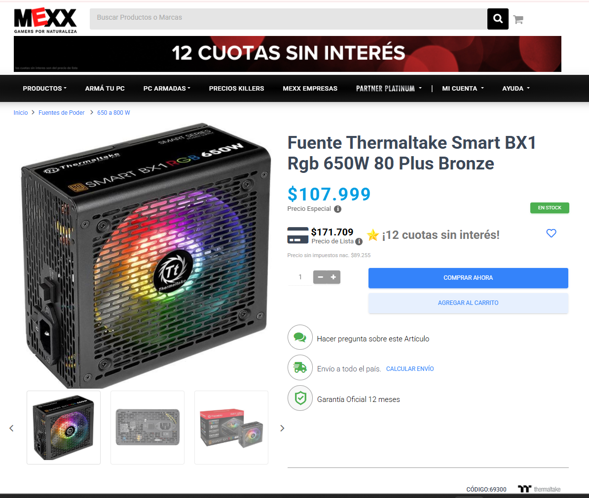
Ver producto en la tienda
En Mexx con un costo de $108.000
-
Gabinete: Mid Tower blanco con 4 ventiladores ARGB
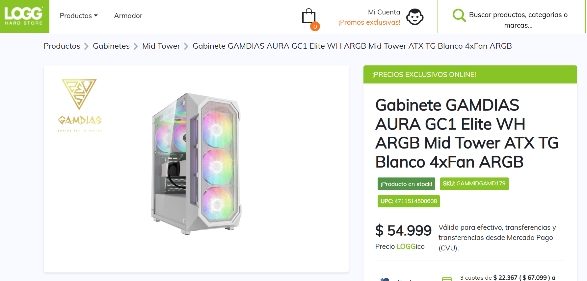
Ver producto en la tienda
En Logg con un costo de $55.000
- Coolers:Thermaltake LE120 ARGB Sync 3×120 mm
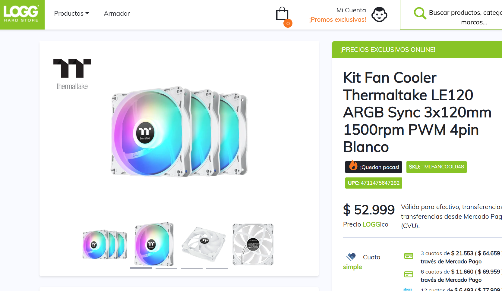
Ver producto en la tienda
En logg con un costo de $53.000
-
Monitor:Monitor Gamer Curvo LED Solarmax 24" SX24C7
100Hz FHD HDMI
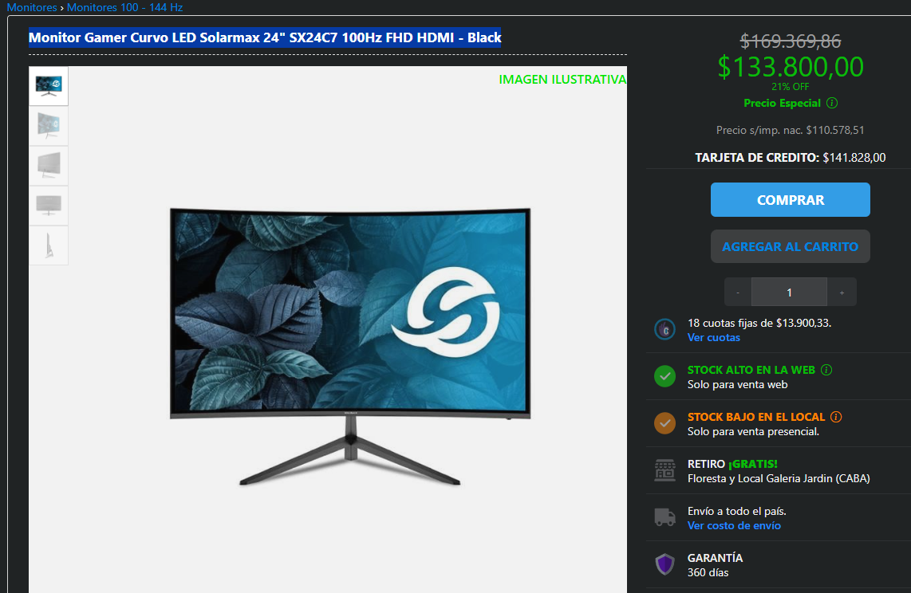
Ver producto en la tienda
En maximus con un costo de $133.800
-
Perifericos:Teclado Redragon S147 + mouse + Auricular
Gamer Redragon Cronus
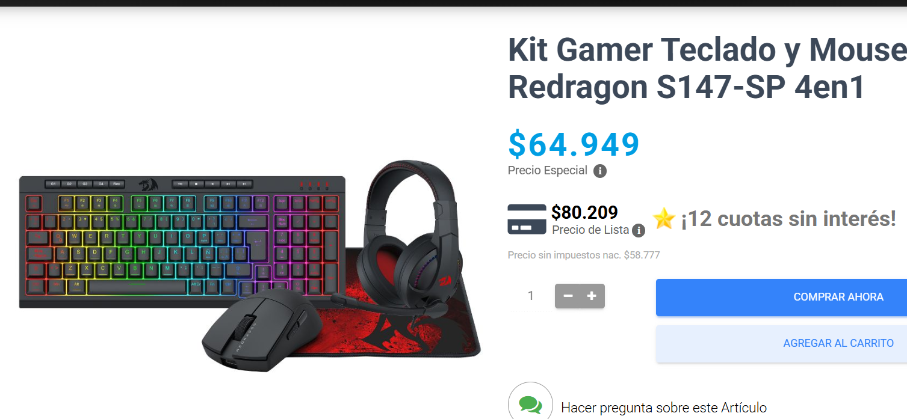
Ver producto en la tienda
En mexx con un costo de $65.000
-
Parlantes:Genius SP-HF180 Negro USB 6 Watt, 160 Hz,
Entrada de audio: 3.5 mm
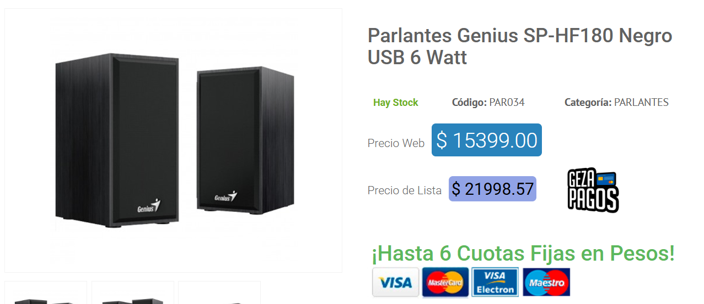
Ver producto en la tienda
En gezatek con un costo de $15.400
-
Sistema de Alimentación Ininterrumpida:UPS Forza
Interactiva NT-1002A
 Ver producto en la tienda
Ver producto en la tienda
En Try con un costo de $96.140
-
Web Cam:Camara Web Micro C721 Hd 720p Ready con
Micrófono Stream
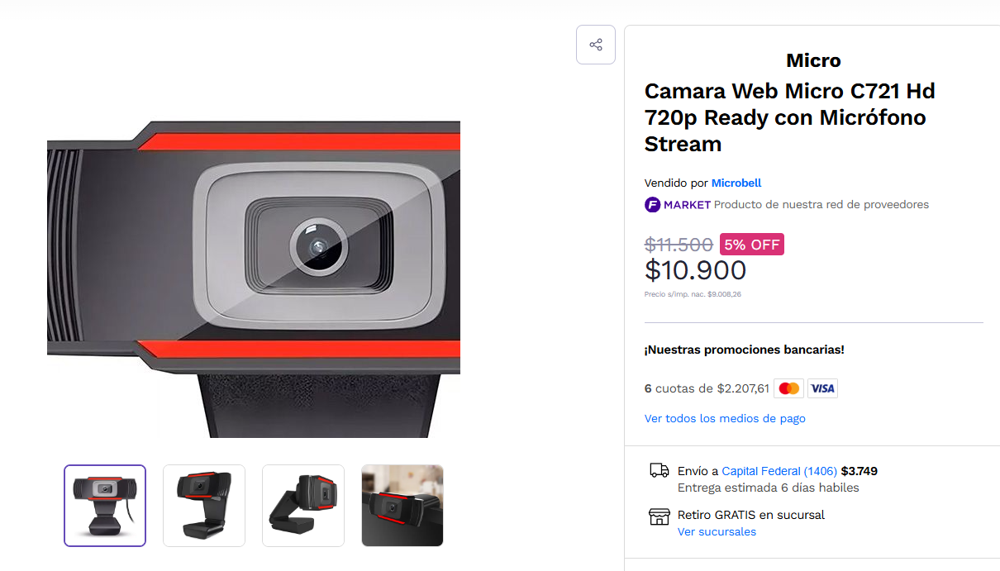
Ver producto en la tienda
En fravega con un costo de $10.900
Justificación de la elección y comparación con alternativa descartada
Elección principal
Elegi el Ryzen 7 5700G por ofrecer ocho núcleos y dieciséis hilos, lo
que permite ejecutar el juego, el software de transmisión y tareas de
fondo de manera simultánea sin pérdida de rendimiento. Además, su GPU
integrada Radeon Graphics sirve como respaldo en caso de falla de la
placa dedicada, y su bajo consumo (65 W) mantiene una temperatura
estable incluso durante sesiones prolongadas de transmisión. Como
alternativa, tenia el AMD Ryzen 5 8400F (5.0 GHz, 6 núcleos y 12
hilos), que presenta una frecuencia turbo superior y pertenece a la
nueva plataforma AM5. Pero lo descarte ya que no posee gráficos
integrados, su plataforma AM5 implica un mayor costo de motherboard y
memoria (DDR5)
Tabla Comparativa de la IA:
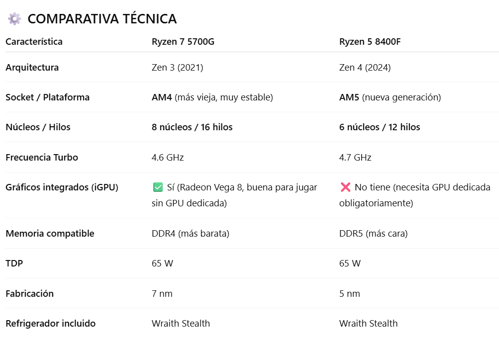
En la pagina web de Versus se puede observar que los datos coinciden y
se realiza una comparacion igual a la que realizo la IA:
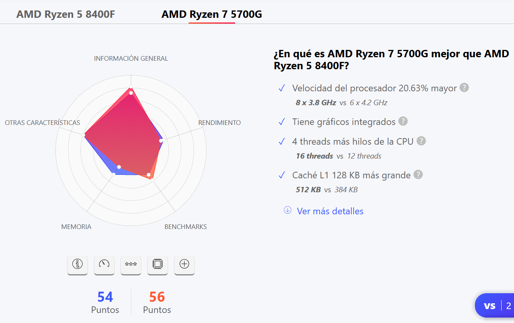
Ver pagina web
La placa madre ASUS PRIME B550M-A AC complementa al procesador con
soporte para memoria DDR4 a alta frecuencia (3200 MHz), puertos M.2
NVMe PCIe 4.0 y conectividad Wi-Fi integrada, lo que garantiza una
transmisión estable y rápida, especialmente útil para streamers que
dependen de una buena conexión inalámbrica. Fue comparada con la MSI
B550M PRO-VDH WiFi, la cual ofrece un rendimiento similar pero con un
costo ligeramente mas elevado.
Tabla Comparativa de la IA:

En la pagina web de Versus se puede observar que los datos coinciden y
se realiza una comparacion igual a la que realizo la IA:
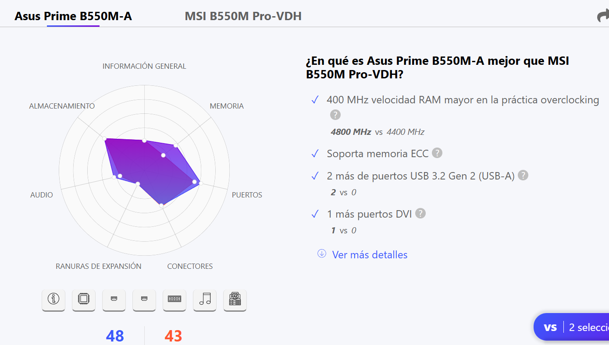
Ver pagina web
La memoria RAM de 16 GB DDR4 (2×8 GB en Dual Channel) es ideal para el
tipo de contenido que se busca producir: Minecraft, junto con OBS
Studio, Chrome y extensiones como chat y overlays, consume entre 8 y
12 GB, por lo que disponer de 16 GB asegura fluidez sin
interrupciones. La elección de memorias Hiksemi Armor 3200 MHz se basó
en su compatibilidad con Ryzen, buen rendimiento y bajo costo frente a
opciones más caras como la Corsair Vengeance RGB Pro SL, que fue
descartada por su precio significativamente mayor sin mejorar el
rendimiento real.
Tabla Comparativa IA:
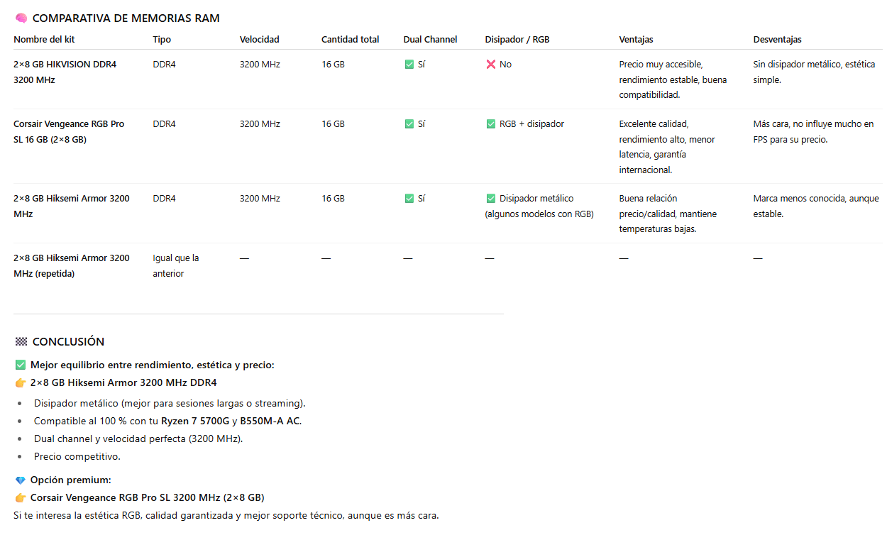
En distintas paginas web encontre las caracteristicas que coinciden
con lo que me dijo la IA, la Corsair Vengeance RGB Pro SL tiene 44 mm
para una mayor compatibilidad con disipadores de CPU voluminosos,
iluminación RGB, y garantiza una alta calidad de señal y estabilidad.
Esto permite un potencial de overclocking superior. Si bien es una
mejor opcion, su costo es mas elevado que la Hiksemi Armor 3200 MHz.
Caracteristicas de la Hiksemi Armor 3200 MHz y la Corsair Vengeance
RGB Pro SL:
El almacenamiento NVMe de 1 TB se eligió por su alta velocidad de
lectura (hasta 6000 MB/s), permitiendo que tanto el sistema operativo
como el software de grabación y los mundos del juego carguen de manera
instantánea, reduciendo los tiempos de espera y mejorando la
experiencia del usuario. Frente al Patriot P400 Lite Gen4, el Kingston
ofrece mayor soporte técnico y garantía en Argentina, además de un
mejor desempeño sostenido.
Tabla Comparativa IA:
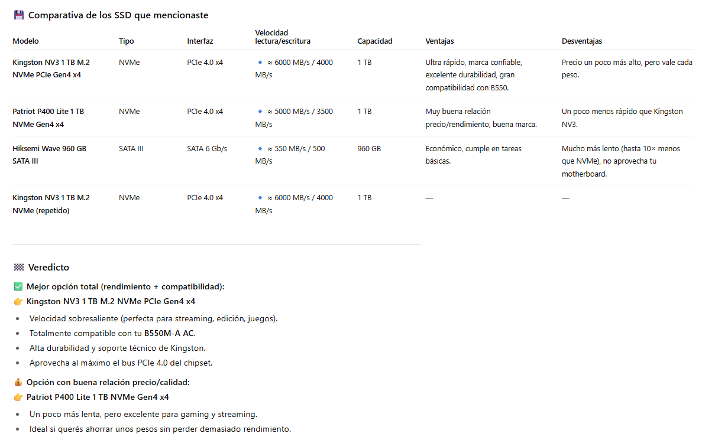
En la pagina web de Versus se puede observar que los datos coinciden y
se realiza una comparacion similar a la que realizo la IA:
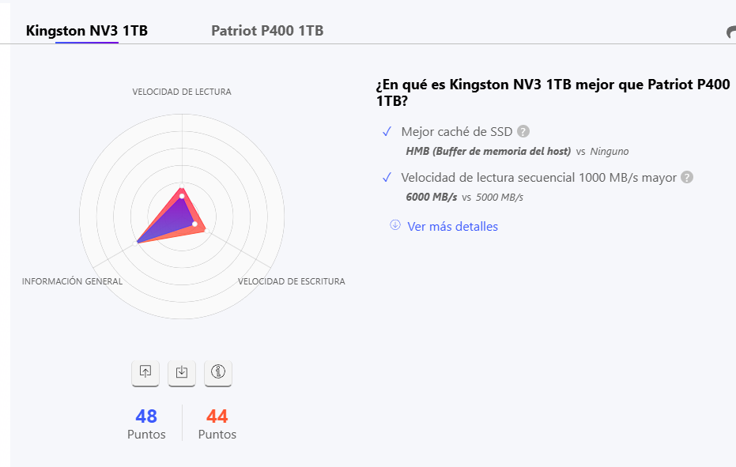
Ver pagina web
La placa de video Galax RTX 3050 EX (6 GB) es clave en la
configuración, ya que incorpora el codificador NVENC de NVIDIA, un
chip dedicado que se encarga de procesar el video en tiempo real sin
sobrecargar el procesador principal. Esto permite transmitir en 1080p
a 60 FPS sin afectar el rendimiento del juego, además de soportar
tecnologías como DLSS, que mejoran la tasa de cuadros por segundo.
Ademas de que es una de las mas economicas en el mercado. Frente a la
Asus RTX 3050 Dual OC, la versión de GALAX ofrece un sistema de
refrigeración más silencioso y un precio inferior, sin perder
rendimiento.
Tabla Comparativa IA:
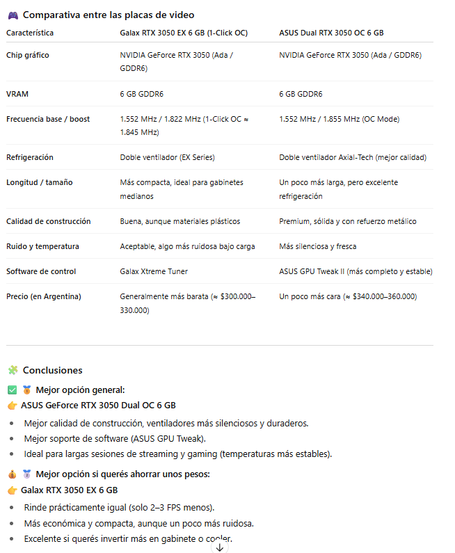
En la pagina web de Versus se puede observar que los datos coinciden y
se realiza una comparacion similar a la que realizo la IA:
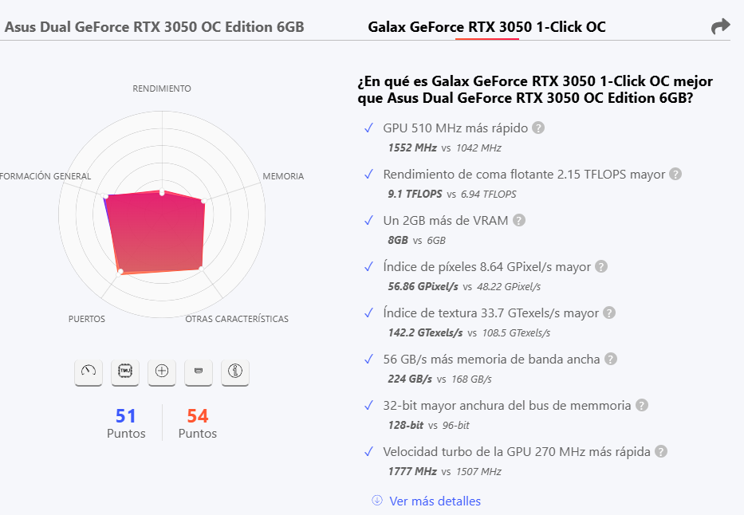
Ver pagina web
La Thermaltake Smart BX1 RGB 650W 80 Plus Bronze se eligió por su
certificación 80 Plus Bronze, que asegura eficiencia energética y
estabilidad, fundamental para proteger los componentes durante
sesiones de juego y transmisión. Proporciona potencia suficiente para
el Ryzen 7 + RTX 3050, con margen adicional para futuras
actualizaciones. Fue comparada con la Cooler Master MWE 650W Bronze,
que tiene especificaciones similares pero sin iluminación RGB y menor
calidad de cables.
Tabla Comparativa IA:
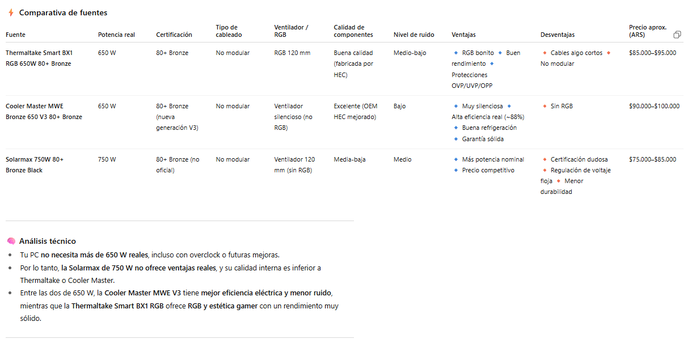
Paginas en las que los datos de las fuentes coinciden con los datos de
la IA:
Pagina Cooler Master MWE 650W Bronze
Pagina Thermaltake Smart BX1 RGB 650W
El Gabinete GAMDIAS AURA GC1 Elite WH ARGB fue elegido por su amplia
ventilación, panel lateral de vidrio templado y cuatro ventiladores
ARGB preinstalados, lo que mejora la refrigeración interna sin costos
adicionales. Fue comparado con el Xigmatek Aqua M Nano II, que si bien
es atractivo, tiene menos espacio interno y peor gestión de cables.
Tabla Comparativa IA:
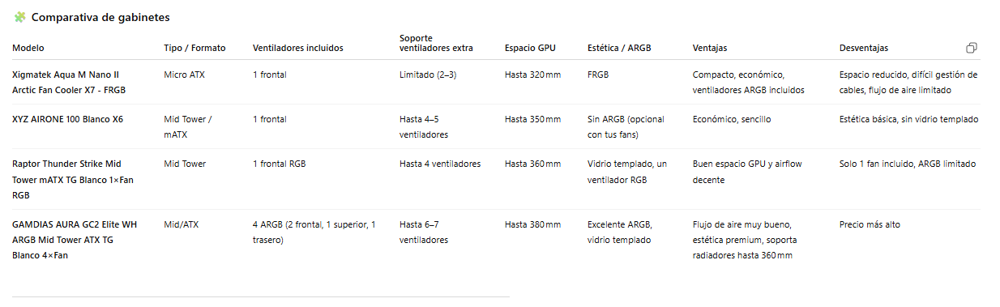
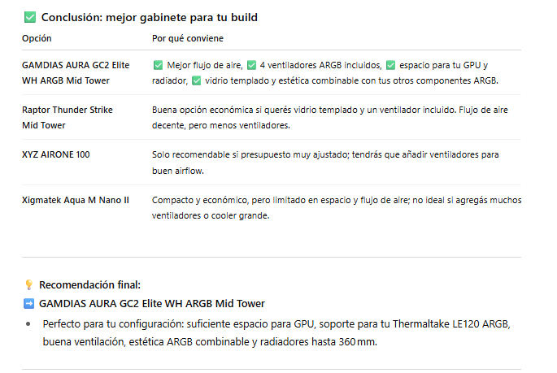
El Monitor Gamer Curvo LED Solarmax 24" SX24C7 100Hz FHD HDMI - Black
lo elegi porque es uno de los mas economicos, que tiene un buen precio
en relacion a su calidad, lo compare con el Valkyrie 24" 200Hz 1ms, si
bien este es mucho mejor tambien es mas caro.
Tabla Comparativa IA:
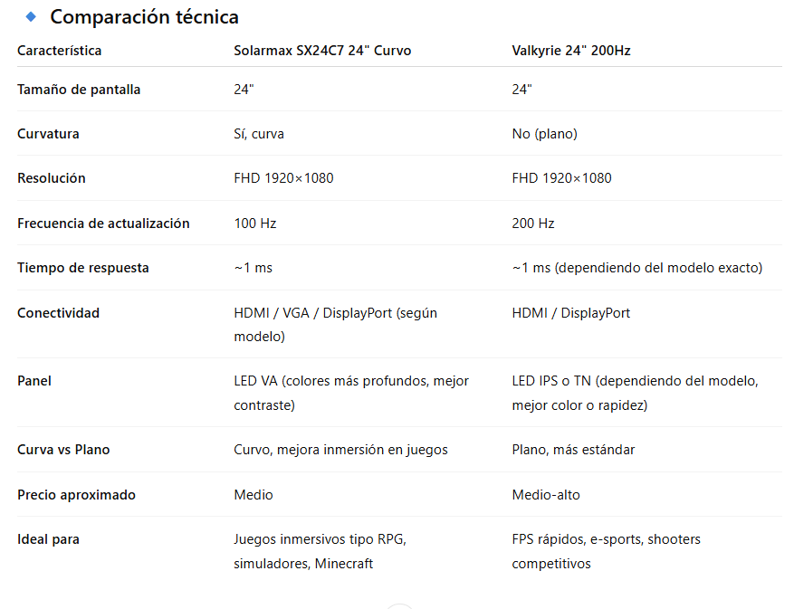
El sistema operativo elegido es Windows 11, por su compatibilidad con
los controladores de hardware modernos y su optimización para
procesadores multinúcleo como el AMD Ryzen 7 5700G. Windows 11 permite
ejecutar de manera fluida tanto los juegos como las aplicaciones
necesarias para la transmisión, brindando un entorno estable y seguro.
Ademas de que tiene la version gratiuta.
Rendimiento esperado
- Minecraft (sin shaders): más de 200 FPS
- Minecraft (con shaders): entre 80 y 140 FPS
Transmisión estimada con OBS (NVENC): 1080p a 60 FPS estable, o 720p
para menor ancho de banda.
Respuestas IA
Que procesador es mejor para correr minecraft y stremear con buena
calidad y a un buen precio?
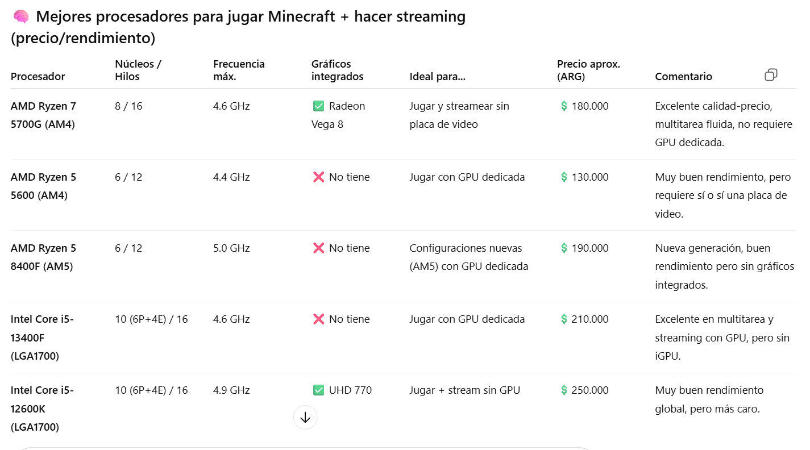
Después de comparar los procesadores de la tabla, me quedo claramente
con el AMD Ryzen 7 5700G. Me parece el más equilibrado entre precio,
rendimiento y practicidad. Tiene buena potencia con sus 8 núcleos y 16
hilos, y además trae gráficos integrados, algo que me parece súper útil
si todavía no se tiene una placa de video o si llega a fallar la
dedicada. El Ryzen 5 5600 también me parece una buena opción si uno ya
tiene una GPU, pero el hecho de que no tenga gráficos integrados lo hace
menos flexible. En cambio, el Ryzen 7 5700G te permite jugar y hacer
streaming sin depender tanto de otro componente caro. El Ryzen 5 8400F
está bien, pero usa una plataforma nueva (AM5) que todavía es más
costosa, así que no me parece la mejor relación costo/beneficio. Y los
Intel Core i5, si bien tienen muy buen rendimiento, están bastante más
caros, y en general conviene más si ya tenés una GPU dedicada.
Resúmen técnico explicado con IA + traducción al “lenguaje común”
- ¿Qué es el bitrate en streaming?
Explicación con IA
El bitrate (tasa de bits) es la cantidad de datos digitales que se
transmiten o procesan por segundo en una señal de video o audio,
expresada en kilobits por segundo (kbps) o megabits por segundo
(Mbps).En streaming, el bitrate determina la calidad del video en
tiempo real: a mayor bitrate, más información se envía por segundo y
por lo tanto la imagen y el sonido son más nítidos. Sin embargo, un
bitrate elevado también requiere una mayor velocidad de subida en la
conexión de Internet y una codificación eficiente por parte del
software de transmisión (como OBS Studio). Los valores comunes suelen
ser: 2500–4000 kbps para 720p a 30 FPS, 4500–6000 kbps para 1080p a 60
FPS
Traducción al lenguaje común
El bitrate es como la cantidad de datos que tu computadora manda por
segundo cuando haces un stream. Si lo pones muy alto, la imagen se ve
mas linda, pero se puede trabar si tu Internet no es rapido, si lo
bajas, el video se ve peor, pero anda mas fluido.
- ¿Qué es la latencia?
Explicación con IA
La latencia es el tiempo que tarda un dato en viajar desde su punto de
origen hasta su destino, medido en milisegundos (ms).En el contexto
del streaming y los videojuegos, representa el retardo entre la acción
y la respuesta. Por ejemplo, al presionar un botón o hablar por
micrófono, hay un breve lapso hasta que esa información llega al
servidor o a los espectadores. Una baja latencia (menos de 50 ms) es
ideal para juegos en línea competitivos y transmisiones en vivo,
mientras que una alta latencia (más de 150 ms) puede provocar demoras
visibles. Términos técnicos: ping, lag, packet loss (pérdida de
paquetes), jitter (variación del retardo)
Traducción al lenguaje común
La latencia es el tiempo de respuesta, como cuando hablas por
videollamada y la otra persona tarda un segundo en escucharte. En los
juegos y el streaming, cuanto mas baja sea, mejor responde todo y mas
natural se siente.
- ¿Qué función cumple la GPU en una PC gamer?
Explicación con IA
La GPU (Graphics Processing Unit) es el procesador gráfico encargado
de realizar los cálculos necesarios para generar y renderizar
imágenes, texturas, sombras y efectos visuales en tiempo real. En una
PC gamer, la GPU trabaja junto con la CPU (procesador central), pero
se especializa en operaciones paralelas que permiten mantener un alto
número de FPS (frames per second) en los videojuegos.Durante el
streaming, la GPU también puede encargarse de la codificación del
video mediante tecnologías como NVENC (NVIDIA) o AMD VCE, liberando
carga del procesador principal. Términos técnicos: shader cores, VRAM
(Video RAM), pipeline gráfico, renderizado 3D, CUDA cores, frecuencia
base y boost.
Traducción al lenguaje común:
La GPU es basicamente el motor grafico de la pc, es la parte que hace
que los juegos se vean bien y funcionen rapido. Tambien ayuda a que el
procesador no se sobrecargue cuando haces stream, porque se encarga de
procesar el video y mandarlo sin trabarse.
- ¿Qué es la VRAM?
Explicación con IA
La VRAM (Video Random Access Memory) es la memoria dedicada de la
tarjeta gráfica (GPU). Se usa para almacenar texturas, modelos 3D,
sombreadores y otros datos visuales. Cuanta más VRAM tenga una GPU,
mayor resolución y calidad gráfica puede manejar sin pérdidas de
rendimiento. Por ejemplo, una RTX 3050 con 6 GB GDDR6 es suficiente
para jugar a 1080p con gráficos altos.
Traducción al lenguaje común:
La VRAM es como la memoria propia de la placa de video, cuanto mas
tenga, mas facil le resulta mostrar imagenes de buena calidad y
texturas grandes.
- ¿Qué es un encoder o codificador de video?
Explicación con IA
Un encoder es un componente (de software o hardware) que convierte la
señal de video cruda en un formato comprimido y listo para transmitir
(como H.264 o H.265). Los encoders por hardware (como NVENC en NVIDIA
o AMF en AMD) utilizan la GPU para codificar sin sobrecargar la CPU.
Esto mejora la eficiencia y evita caídas de FPS durante el streaming.
Traducción al lenguaje común:
El encoder es el encargado de convertir el video del juego en algo que
se pueda enviar a Internet. Si usas OBS Studio, el encoder decide como
se ve tu stream. Si la placa de video tiene un buen encoder (como
NVENC), podes transmitir sin que el juego se frene.
Presupuesto - Mariano Diaz
La propuesta de pc que traigo con el presupuesto acoradado de 1000$
Dolares (teniendo en cuenta el precio del dolar al dia de la fecha que
es de 1450$ pesos) se ajusta a la necesidad de poder correr y hacer
streaming de minecaft en las plataformas de directos, con un margen de
mejora mas o menos limitado por la placa madre, pero en general, en mi
opinion es una buena pc para arrancar en el mundo del streamig de
videjuegos.
Los precios en su totalidad fueron obtenidos de la tienda Maximus Gaming
Hardware (maximus.com.ar), a
excepción del UPS (Gezatek Computación:
gezatek.com.ar) y el juego
(Microsoft Store: xbox.com).
La elección


Software
Como costo de software solo corre el precio del juego (Minecraft Java
Edition, $13.199 ARS), ya que el software utilizado para hacer streaming
es Open Broadcast Software (OBS), que es gratis y de código abierto, y
como sistema operativo elegi el Windowns 11 Pro, que su precio es de
14569 $ pesos.
Los motivos de cada elección
Procesador
(Ryzen 5 5600GT): Es un CPU moderno y potente,
excelente para manejar juegos actuales y multitarea sin problemas. La
característica más relevante del Ryzen 5 5600GT es su naturaleza de
APU (Unidad de Procesamiento Acelerado), combinando una
CPU moderna de 6 núcleos con gráficos integrados de alto rendimiento
(Radeon Graphics con 7 núcleos de GPU).
| Alternativas viables |
Ventajas |
Desventajas |
| AMD Ryzen 5 5500 |
Precio |
Socket AM4 |
| AMD Ryzen 5 5600G |
Rendimiento |
Precio y socket AM4 |
| AMD Ryzen 5600GT |
Rendimiendo levemente mejorado |
socket AM4 sin margen de mejoras significativas |
Tarjeta gráfica
Tarjeta Gráfica Dedicada (RTX 3050 EX 8GB): La
Nvidia GeForce RTX 3050 con 8GB es el
corazón de la configuración gamer. Permite jugar bien a la
mayoría de los títulos modernos en Full HD (1080p) y
acceder a tecnologías de Nvidia como DLSS y
Ray Tracing (aunque este último en configuraciones más
modestas).
| Alternativas viables |
Ventajas |
Desventajas |
| Radeon RX 6600 |
Mejor rendimiento FPS (más rápida) y más económica que la RTX
3050.
|
El Ray Tracing es muy limitado, FSR suele ser inferior a DLSS en
calidad.
|
| Nvidia RTX 4060 |
Buen precio, codec NVENC |
Poca disponibilidad, rendimiento pobre respecto al CPU elegido
|
Almacenamiento
Almacenamiento Rápido (SSD NVMe): Incluye un
Disco Sólido SSD 500GB Kingston NV3 M.2 NVMe. Esto
garantiza que el sistema operativo y los juegos carguen
muy rápido, mejorando la experiencia general.
Memoria RAM
Memoria RAM Suficiente: Con 2x8GB de
memoria DDR4 3200Mhz (16GB en total), el equipo tiene
la cantidad y velocidad estándar actual para gaming y uso
intensivo.
Fuente
Fuente de Poder (VP-500 500W Gamemax 80 PLUS Bronze):
Es una fuente adecuada para los componentes, pero no deja mucho margen
de potencia para futuras actualizaciones de hardware de gama más alta.
Placa madre
MSI A520M A Pro es una placa de entrada. Si bien es
suficiente para los componentes actuales, ofrece
pocas opciones de expansión o
overclocking futuro.
Fuente de alimentación ininterrumpida para contrarrestar cortes de
energía
Se añadió un UPS (Uninterruptable Power Supply: fuente de alimentación
ininterrumpida) para permitir que el usuario del equipo cierre la
transmisión de manera controlada en caso de que el suministro de energía
se corte de forma inesperada.
Rendimiento esperado
Minecraft (Vanilla/Optimizado)
-
FPS Esperados: En configuraciones base de Minecraft
(Java Edition optimizada con mods como Optifine o Sodium, o la
versión Bedrock), el rendimiento será
extremadamente alto.
-
Estimación de FPS: Podrías alcanzar
cientos de FPS sin shaders (incluso hasta
+900 FPS sin shaders en ciertas pruebas con la 3050). Esto
asegura que el juego se sienta fluido y que el streaming no
consuma demasiados recursos, manteniendo una experiencia perfecta
para el jugador y el espectador.
-
Recomendación: Para streaming se
recomienda un mínimo de 60 FPS, por lo que este equipo tiene un
rendimiento sobrado.
Análisis de Rendimiento en Streaming (General)
Tu configuración está optimizada para la codificación de video, lo que
significa que el impacto en el rendimiento de tus juegos mientras
transmites será mínimo y la calidad de tu
stream será muy alta.
La Clave: Codificador NVENC de la RTX 3050
La RTX 3050 utiliza el codificador de hardware
NVENC (NVIDIA Encoder).
-
¿Qué hace? NVENC es un chip dedicado dentro de la
tarjeta gráfica que se encarga de comprimir el video para la
transmisión.
-
Beneficio: Al usar NVENC, el procesador (Ryzen 5
5600GT) queda casi libre para ejecutar el juego y manejar otras
tareas del sistema. Esto se traduce en
más FPS estables en el juego y una
mejor calidad de stream comparado con usar
la codificación por CPU (x264).
Colaboración de la IA
Ayuda con las caracteristicas tecnicas del hardware
Con ayuda de la IA pude hacer una comparativa de los componentes
elegidos con otros similares, optimizando el analisis de sus
caracteriscas tecnicas.
Comparación y validación con fuentes externas
Explicación técnica y traducción al “lenguaje común”

La latencia es simplemente el retraso que existe entre que haces algo en
internet (como dar un clic, disparar en un juego o hablar en una
videollamada) y el momento en que obtenes una respuesta.
Se puede imaginar como el tiempo de ida y vuelta que tarda un mensajero
en llevar tu solicitud a un centro de datos muy lejano y traer de vuelta
la respuesta.
-
Si la latencia es baja (el mensajero es muy rápido), todo se siente
instantáneo y fluido.
-
Si la latencia es alta (el mensajero se queda atascado en el
tráfico), notarás esos molestos retrasos o pausas, lo que llamamos
“lag”.